java-17 RADARGUNs1
Context at bottom
/home/jvanek/git/benchmarks-in-nested-virtualisation-toolchain/final_results/vm_results/vm_results_RADARGUNs1
java-17
RADARGUNs1
vm_results_RADARGUNs1
- vm_results_RADARGUNs1 - throughput get
- vm_results_RADARGUNs1 - throughput put
- vm_results_RADARGUNs1 - response mean time get
- vm_results_RADARGUNs1 - response mean time put
vm_results_RADARGUNs1 - throughput get
Expected number of java-17 JDKs: 9
1st avgmed_alljdks_metric:
/home/jvanek/git/benchmarks-in-nested-virtualisation-toolchain/final_results/result_processing.py /home/jvanek/git/benchmarks-in-nested-virtualisation-toolchain/final_results/vm_results/vm_results_RADARGUNs1 BasicOperations.Get.Throughput= False
values: [2452264, 2419120, 2483900, 2478287, 2402987, 2507708, 2435303, 2504828, 2487703, 2196799, 2180098, 2384803, 2334137, 2489969, 2404653, 2135148, 2153334, 2453534, 2539158, 2447005, 2195392, 2174670, 2447522, 2135845, 2474088, 2751204, 2778316, 2706960, 2728552, 2719872, 2599807, 2582809, 2776386, 2573735, 2589686, 2746780, 2535706, 2743291, 2731312, 2628946, 2900286, 2778862, 2802040, 2816259, 2676024]

Expected number of iterations: 5
final number of values: 45 out of 45
Pass rate: 100.0%
values: (2135148, 2900286, 2521890.8444444444, 2504828)

** accuracy from all jdks and runs
more is better
MIN: 2135148
MAX: 2900286
AVG: 2521890.8444444444
MED: 2504828
Relative differences 1:
MIN-MAX: 26.0 %
MIN-AVG: 15.0 %
MIN-MED: 15.0 %
MAX-MIN: -36.0 %
MAX-AVG: -15.0 %
MAX-MED: -16.0 %
AVG-MED: -1.0 %
stored to java-17.properties. sort | uniq that!
2nd avgmed_by_jdk_metric:
values: [2447311.6, 2426468.2, 2358732.0, 2345635.8, 2285503.4, 2736980.8, 2624484.6, 2677207.0, 2794694.2]
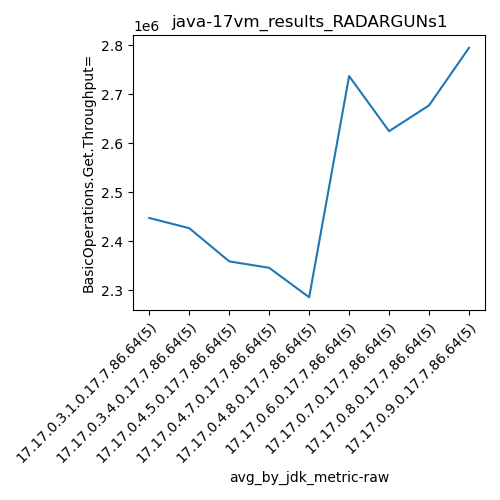
values: [2452264, 2487703, 2384803, 2447005, 2195392, 2728552, 2589686, 2731312, 2802040]
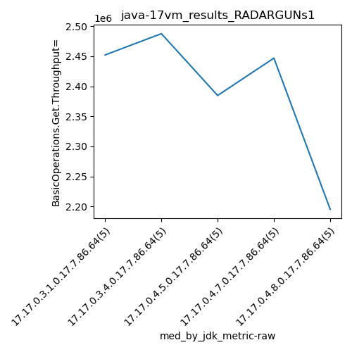
values: (2285503.4, 2794694.2, 2521890.8444444444, 2447311.6)
values: (2195392, 2802040, 2535417.4444444445, 2487703)
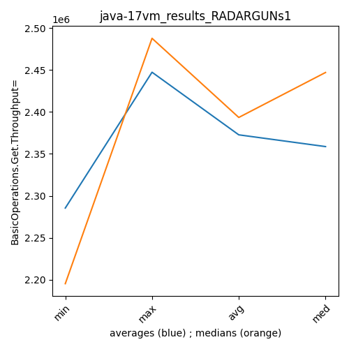
** accuracy from all jdks where runs were avged
more is better
MIN: 2285503.4
MAX: 2794694.2
AVG: 2521890.8444444444
MED: 2447311.6
Relative differences 1:
MIN-MAX: 18.0 %
MIN-AVG: 9.0 %
MIN-MED: 7.0 %
MAX-MIN: -22.0 %
MAX-AVG: -11.0 %
MAX-MED: -14.0 %
AVG-MED: -3.0 %
stored to java-17.properties. sort | uniq that!
** accuracy from all jdks where runs were medianed
more is better
MIN: 2195392
MAX: 2802040
AVG: 2535417.4444444445
MED: 2487703
Relative differences 1:
MIN-MAX: 22.0 %
MIN-AVG: 13.0 %
MIN-MED: 12.0 %
MAX-MIN: -28.0 %
MAX-AVG: -11.0 %
MAX-MED: -13.0 %
AVG-MED: -2.0 %
stored to java-17.properties. sort | uniq that!
vm_results_RADARGUNs1 - throughput put
Expected number of java-17 JDKs: 9
1st avgmed_alljdks_metric:
/home/jvanek/git/benchmarks-in-nested-virtualisation-toolchain/final_results/result_processing.py /home/jvanek/git/benchmarks-in-nested-virtualisation-toolchain/final_results/vm_results/vm_results_RADARGUNs1 BasicOperations.Put.Throughput= False
values: [612992, 604752, 620923, 619644, 600728, 626922, 608789, 626205, 621959, 549199, 545012, 596167, 583527, 622495, 601194, 533757, 538354, 613389, 634818, 611702, 548864, 543645, 611874, 534006, 618514, 687878, 694528, 676691, 682122, 679962, 649970, 645675, 694116, 643504, 647339, 686683, 633882, 685806, 682925, 657214, 725051, 694632, 700457, 703996, 669059]
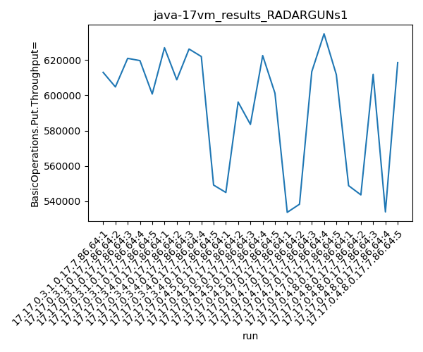
Expected number of iterations: 5
final number of values: 45 out of 45
Pass rate: 100.0%
values: (533757, 725051, 630464.911111111, 626205)

** accuracy from all jdks and runs
more is better
MIN: 533757
MAX: 725051
AVG: 630464.911111111
MED: 626205
Relative differences 1:
MIN-MAX: 26.0 %
MIN-AVG: 15.0 %
MIN-MED: 15.0 %
MAX-MIN: -36.0 %
MAX-AVG: -15.0 %
MAX-MED: -16.0 %
AVG-MED: -1.0 %
stored to java-17.properties. sort | uniq that!
2nd avgmed_by_jdk_metric:
values: [611807.8, 606614.8, 589679.0, 586404.0, 571380.6, 684236.2, 656120.8, 669302.0, 698639.0]
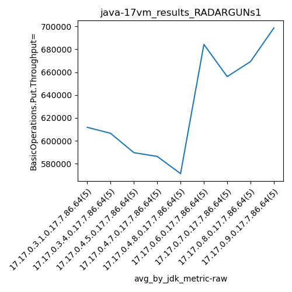
values: [612992, 621959, 596167, 611702, 548864, 682122, 647339, 682925, 700457]
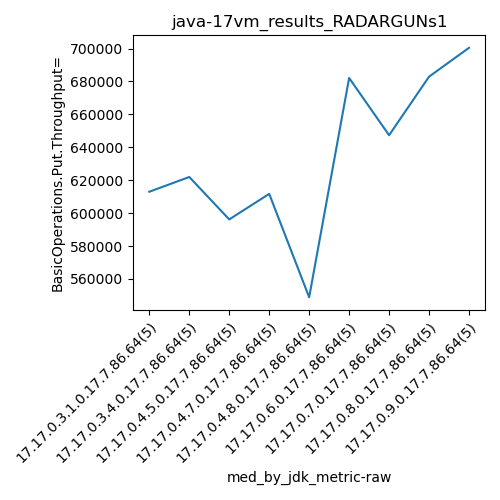
values: (571380.6, 698639.0, 630464.9111111112, 611807.8)
values: (548864, 700457, 633836.3333333334, 621959)
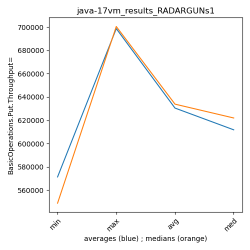
** accuracy from all jdks where runs were avged
more is better
MIN: 571380.6
MAX: 698639.0
AVG: 630464.9111111112
MED: 611807.8
Relative differences 1:
MIN-MAX: 18.0 %
MIN-AVG: 9.0 %
MIN-MED: 7.0 %
MAX-MIN: -22.0 %
MAX-AVG: -11.0 %
MAX-MED: -14.0 %
AVG-MED: -3.0 %
stored to java-17.properties. sort | uniq that!
** accuracy from all jdks where runs were medianed
more is better
MIN: 548864
MAX: 700457
AVG: 633836.3333333334
MED: 621959
Relative differences 1:
MIN-MAX: 22.0 %
MIN-AVG: 13.0 %
MIN-MED: 12.0 %
MAX-MIN: -28.0 %
MAX-AVG: -11.0 %
MAX-MED: -13.0 %
AVG-MED: -2.0 %
stored to java-17.properties. sort | uniq that!
vm_results_RADARGUNs1 - response mean time get
Expected number of java-17 JDKs: 9
1st avgmed_alljdks_metric:
/home/jvanek/git/benchmarks-in-nested-virtualisation-toolchain/final_results/result_processing.py /home/jvanek/git/benchmarks-in-nested-virtualisation-toolchain/final_results/vm_results/vm_results_RADARGUNs1 BasicOperations.Get.ResponseTimeMean True
values: [1443, 1450, 1447, 1541, 1472, 1434, 1478, 1424, 1443, 1473, 1443, 1544, 1450, 1468, 1499, 1458, 1494, 1460, 1423, 1432, 1420, 1437, 1464, 1540, 1415, 1331, 1292, 1327, 1298, 1329, 1285, 1324, 1324, 1304, 1349, 1334, 1387, 1348, 1304, 1352, 1222, 1276, 1252, 1271, 1282]
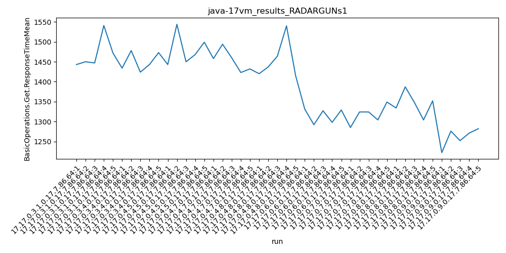
Expected number of iterations: 5
final number of values: 45 out of 45
Pass rate: 100.0%
values: (1222, 1544, 1394.2888888888888, 1423)

** accuracy from all jdks and runs
more is worse
MIN: 1544
MAX: 1222
AVG: 1394.2888888888888
MED: 1423
Relative differences 1:
MIN-MAX: 26.0 %
MIN-AVG: 11.0 %
MIN-MED: 9.0 %
MAX-MIN: -21.0 %
MAX-AVG: -12.0 %
MAX-MED: -14.0 %
AVG-MED: -2.0 %
stored to java-17.properties. sort | uniq that!
2nd avgmed_by_jdk_metric:
values: [1470.6, 1450.4, 1480.8, 1453.4, 1455.2, 1315.4, 1317.2, 1345.0, 1260.6]

values: [1450, 1443, 1468, 1458, 1437, 1327, 1324, 1348, 1271]
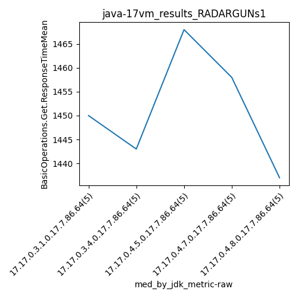
values: (1260.6, 1480.8, 1394.288888888889, 1450.4)
values: (1271, 1468, 1391.7777777777778, 1437)
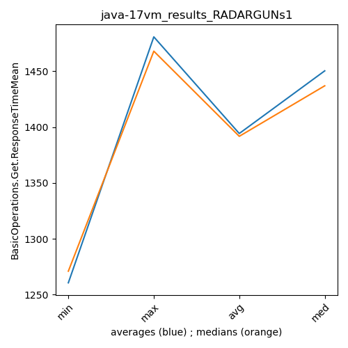
** accuracy from all jdks where runs were avged
more is worse
MIN: 1480.8
MAX: 1260.6
AVG: 1394.288888888889
MED: 1450.4
Relative differences 1:
MIN-MAX: 17.0 %
MIN-AVG: 6.0 %
MIN-MED: 2.0 %
MAX-MIN: -15.0 %
MAX-AVG: -10.0 %
MAX-MED: -13.0 %
AVG-MED: -4.0 %
stored to java-17.properties. sort | uniq that!
** accuracy from all jdks where runs were medianed
more is worse
MIN: 1468
MAX: 1271
AVG: 1391.7777777777778
MED: 1437
Relative differences 1:
MIN-MAX: 16.0 %
MIN-AVG: 5.0 %
MIN-MED: 2.0 %
MAX-MIN: -13.0 %
MAX-AVG: -9.0 %
MAX-MED: -12.0 %
AVG-MED: -3.0 %
stored to java-17.properties. sort | uniq that!
vm_results_RADARGUNs1 - response mean time put
Expected number of java-17 JDKs: 9
1st avgmed_alljdks_metric:
/home/jvanek/git/benchmarks-in-nested-virtualisation-toolchain/final_results/result_processing.py /home/jvanek/git/benchmarks-in-nested-virtualisation-toolchain/final_results/vm_results/vm_results_RADARGUNs1 BasicOperations.Put.ResponseTimeMean True
values: [6740, 6823, 6756, 6612, 6580, 6545, 6813, 6708, 6600, 6794, 6641, 6737, 6890, 6672, 7146, 7105, 6957, 6632, 6597, 6777, 6639, 6710, 6597, 6717, 6742, 5432, 5401, 5271, 5408, 5321, 5280, 5263, 5432, 5420, 5505, 5138, 5442, 5382, 5388, 5172, 4989, 5279, 5188, 5238, 5310]

Expected number of iterations: 5
final number of values: 45 out of 45
Pass rate: 100.0%
values: (4989, 7146, 6106.422222222222, 6597)

** accuracy from all jdks and runs
more is worse
MIN: 7146
MAX: 4989
AVG: 6106.422222222222
MED: 6597
Relative differences 1:
MIN-MAX: 43.0 %
MIN-AVG: 17.0 %
MIN-MED: 8.0 %
MAX-MIN: -30.0 %
MAX-AVG: -18.0 %
MAX-MED: -24.0 %
AVG-MED: -7.0 %
stored to java-17.properties. sort | uniq that!
2nd avgmed_by_jdk_metric:
values: [6702.2, 6692.0, 6817.2, 6813.6, 6681.0, 5366.6, 5380.0, 5304.4, 5200.8]
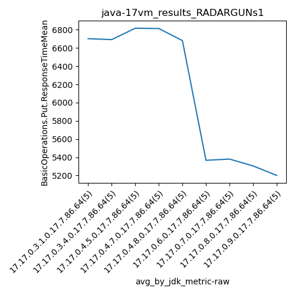
values: [6740, 6708, 6737, 6777, 6710, 5401, 5420, 5382, 5238]
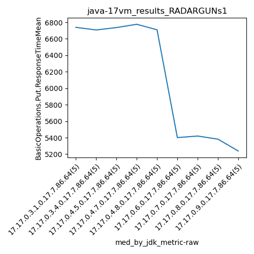
values: (5200.8, 6817.2, 6106.422222222222, 6681.0)
values: (5238, 6777, 6123.666666666667, 6708)
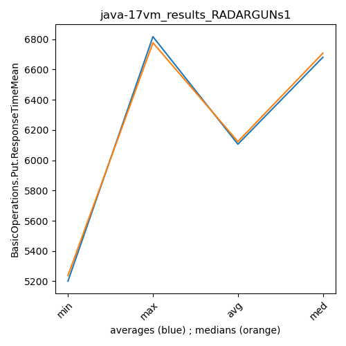
** accuracy from all jdks where runs were avged
more is worse
MIN: 6817.2
MAX: 5200.8
AVG: 6106.422222222222
MED: 6681.0
Relative differences 1:
MIN-MAX: 31.0 %
MIN-AVG: 12.0 %
MIN-MED: 2.0 %
MAX-MIN: -24.0 %
MAX-AVG: -15.0 %
MAX-MED: -22.0 %
AVG-MED: -9.0 %
stored to java-17.properties. sort | uniq that!
** accuracy from all jdks where runs were medianed
more is worse
MIN: 6777
MAX: 5238
AVG: 6123.666666666667
MED: 6708
Relative differences 1:
MIN-MAX: 29.0 %
MIN-AVG: 11.0 %
MIN-MED: 1.0 %
MAX-MIN: -23.0 %
MAX-AVG: -14.0 %
MAX-MED: -22.0 %
AVG-MED: -9.0 %
stored to java-17.properties. sort | uniq that!
/home/jvanek/git/benchmarks-in-nested-virtualisation-toolchain/final_results/vm_results/vm_results_RADARGUNs3
java-17
RADARGUNs1
/home/jvanek/git/benchmarks-in-nested-virtualisation-toolchain/final_results/vm_results/vm_results_DACAPO
java-17
RADARGUNs1
/home/jvanek/git/benchmarks-in-nested-virtualisation-toolchain/final_results/vm_results/vm_results_J2DBENCH
java-17
RADARGUNs1
/home/jvanek/git/benchmarks-in-nested-virtualisation-toolchain/final_results/vm_results/vm_results_SPECJBB
java-17
RADARGUNs1
/home/jvanek/git/benchmarks-in-nested-virtualisation-toolchain/final_results/vm_results/vm_results_JMH
java-17
RADARGUNs1
pass rates:
vm_results_RADARGUNs1=100.0%
Context:
- vm_results
- RADARGUNs1